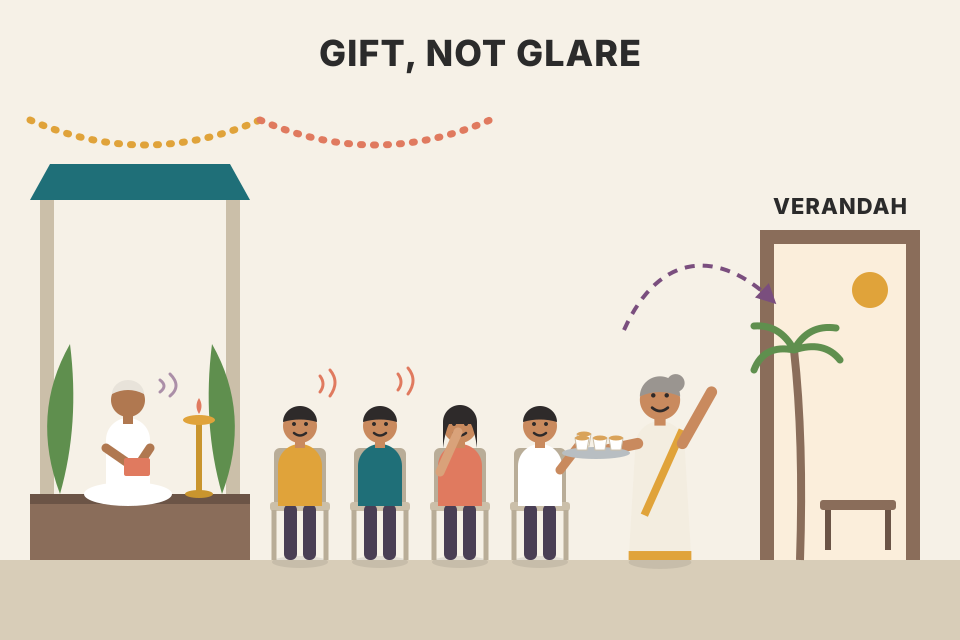
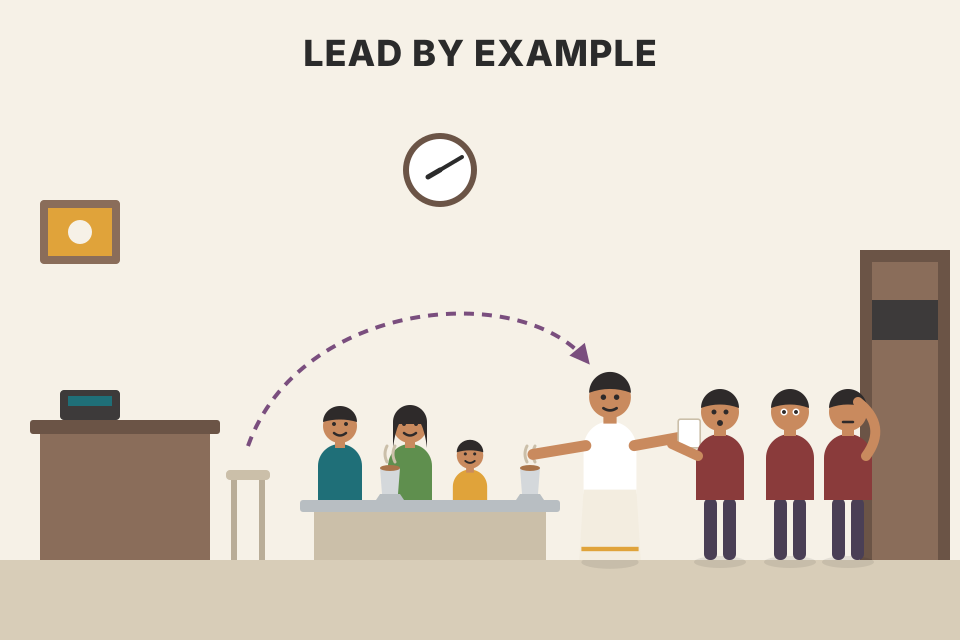
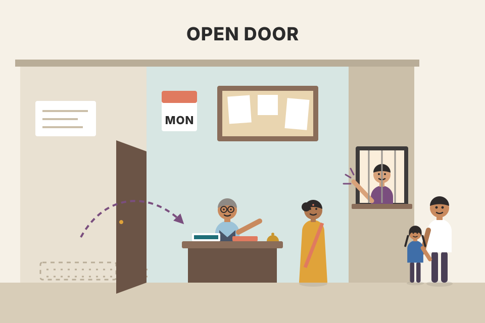
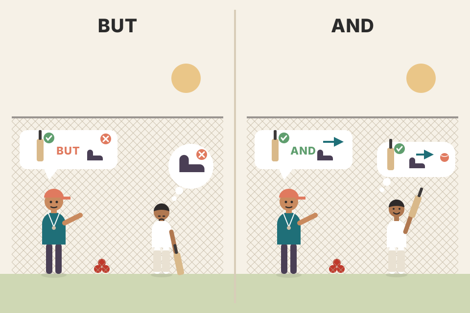
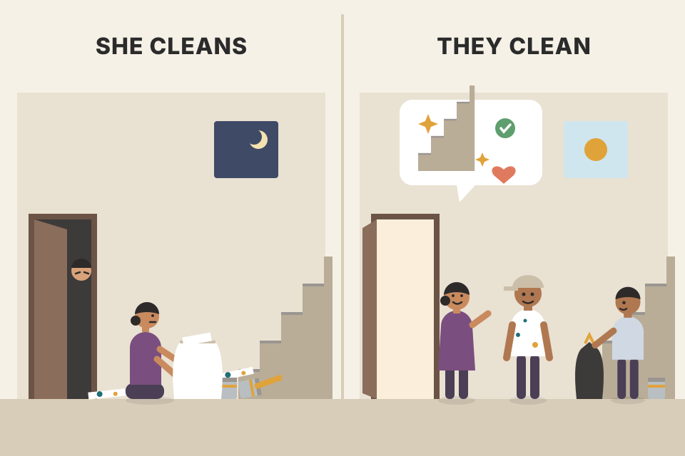
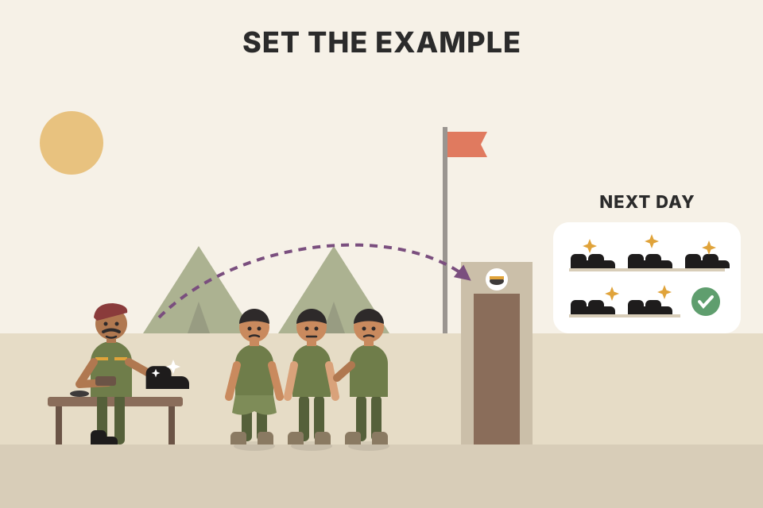
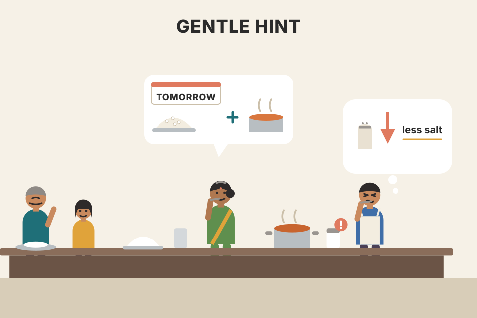

DALE CARNEGIE · HOW TO WIN FRIENDS · PART FOUR · CHAPTER 2 · PDF p204–207
How to Criticize—and Not Be Hated for It
You can point out a mistake without ever saying "you made a mistake". Show the right way, praise the right result, or drop a hint that lets the person fix it themselves.
This is one of the shortest chapters in the book: four pages and six small stories. A steel boss hands cigars to men smoking under a No Smoking sign. A store owner quietly serves a customer his staff were ignoring. A mayor takes the door off his office. A homeowner praises builders for a tidy lawn they never actually tidied. An army sergeant gets his own hair cut instead of shouting about haircuts. A wife tells her husband his dull sermon would make a fine magazine article. In each case everyone understood the criticism, and nobody had to swallow it in public. The chapter's one piece of technique sits in the middle: when you praise and then correct, swap the word "but" for "and".
Principle 2 of Part Four
Call attention to people's mistakes indirectly.
How the chapter fits together
pdf p204–207 · read this first
Where it sits. This is the second chapter of Part Four, "Be a Leader: How to Change People Without Giving Offense or Arousing Resentment". Part Four is the "how to correct" half of the book. Part One said don't criticize, condemn or complain; Part Four admits that a leader sometimes must change what people do, and gives nine ways to do it without the sting. The chapter before this one said begin with praise and honest appreciation. This chapter adds: and then don't hit them with the fault head-on. The next one, talk about your own mistakes first, gives a third way to soften the blow.
The argument as a chain. Carnegie barely argues here; he lets the stories do it. Read down the rows.
Problema rule is broken, a job is done badly→direct criticism makes people resent you
Act it outSchwab's cigarsWanamaker serves the customerLangford removes his door→the action says it, no words needed
The wordpraise + "but" + fault→praise now feels fake→use "and" + the hoped-for result
Praise the goalMarge Jacob thanks the foreman for a clean lawn→they live up to it
Model itSgt Kaiser: "you are leaders", cuts his own hair→they choose the barber
HintMrs Abbott: "a fine article"→he tears it up and speaks freely
PrincipleCall attention to people's mistakes indirectly→works best with sensitive people
"Indirect" does not mean "hidden" or "never said". In every story the person knew exactly what was wrong. What was missing was the accusation.
01 · THE OPENING STORY
Charles Schwab hands out cigars under the No Smoking sign
pdf p204
Carnegie opens with a scene that takes about ten seconds and contains the whole chapter.
Charles Schwabone of his steel millsaround noona "No Smoking" sign right overhead
The situation. Walking through one of his mills at midday, Schwab came across a group of his workers having a smoke, standing directly under a sign that banned smoking.
The obvious move he did not make. He could have pointed up at the sign and asked, sarcastically, "Can't you read?" Most bosses would have. Carnegie stresses that Schwab did not.
What he did. He went over, gave each man a cigar, and said, in effect, that he would be grateful if they smoked them outside.
What happened. The men knew perfectly well that they had broken a rule, and they knew that Schwab knew. That was the point. He had not said a word about the rule, he had given them a small present, and he had treated them as people worth being polite to. Carnegie says they admired him for it, and asks, half joking, how anyone could help loving a boss like that.
What made it "indirect". Look at what Schwab left out and what he kept:
Left out
The accusation ("you broke the rule"), the sarcasm ("can't you read?"), any threat, any audience-pleasing show of authority.
Kept
The correction itself: the smoking moved outside, at once. Plus a gift and a polite request, so the men's pride survived.
That split is the pattern for the whole chapter. The behaviour is still corrected, immediately. Only the blame is dropped.
Dated detail. Handing out cigars at work, and calling grown men "boys", belong to the 1930s. The modern equivalent is the same move with a different gift: the lead who finds people huddled in the wrong place, hands them a coffee and says "let's take this to the break room", instead of quoting the policy. Note too that smoking near hot metal is a real safety risk; Schwab's way still got them away from the sign straight away. Indirect is about tone, not about waiting.
Picture it

At a family wedding in Kerala, a group of cousins is chatting loudly in the front row while the priest is still chanting. The eldest aunt does not glare or hiss "Have you no manners?". She walks over smiling, hands each of them a little packet of payasam from the kitchen, and whispers that it tastes even better out on the verandah. They go, grinning, and every one of them knows exactly why.
Where it breaks: the aunt has decades of family standing, so her gift reads as warmth. A stranger doing the same might look odd or sarcastic. Schwab could pull it off partly because he was the boss; the gift showed he was choosing kindness when he could have chosen punishment.
What's happening behind it
The book's explanation: the men "knew that he knew". Nothing had to be said, so nothing had to be defended. Instead of losing face, they gained it: the boss gave them a present and made them feel important, which Carnegie keeps returning to as the deepest human want (Ch.2).
Beyond the book: sociolinguists Penelope Brown and Stephen Levinson called this face: the public self-image everyone tries to protect. A blunt correction is a "face-threatening act"; doing it "off record" (by action or hint) lets the listener act on the message without anyone having openly accused anyone. Schwab's cigars are a textbook off-record correction. Robert Cialdini's work on reciprocity adds a second reason it worked: a small unexpected gift makes people want to return the favour, here by doing what was asked.
At work
A teammate keeps pushing straight to main late at night "because it's a tiny fix". The Schwab move is not a stern message in the team channel quoting the branch rules. It is a quiet DM: "Saw your fix go in last night, thanks for jumping on it. I've set up a fast-lane review rule so tiny fixes like that get approved in minutes, want to try it next time?" You give them something (a faster path), and the behaviour moves to where it belongs.
Interview angle. "Tell me about a time you had to enforce a rule with someone senior or popular." A strong answer shows you corrected it promptly but privately, and gave them an easy, face-saving route to comply. The weak answer is the "Can't you read?" story told proudly.
Worked example · same rule, two ways
Wrong way
(In the stand-up, in front of everyone) "Some people are still deploying on Friday evenings even though we have a freeze. Please read the release policy."
Public, accusing, and points at a rule everyone already knows. The person defends ("it was urgent") and the room gets tense.
Carnegie way
(Privately) "Thanks for staying late on Friday to get that fix out. I'll buy you a coffee for it. Next time, could we park it till Monday morning? Then if anything breaks, the whole team's around and you don't lose your weekend."
Thanks first, a small gift, and a request framed as being in their interest. The freeze is still kept.
Connects to
Schwab's famous belief that appreciation, not criticism, is how you get the best from people: Part One, Ch.2 "The Big Secret".
Another wordless Schwab move, the chalked number on the mill floor that set the day and night shifts competing: Part Three, Ch.12.
Asking ("I'd appreciate it if…") instead of ordering: Part Four, Ch.4.
02 · THE SAME TRICK IN A SHOP
John Wanamaker quietly serves the customer his staff were ignoring
pdf p204
Carnegie says Wanamaker "used the same technique": correct by doing, not by saying.
John Wanamakerhis big department store, Philadelphiaa daily walk round the floor
The situation. On one of his daily rounds, Wanamaker saw a woman standing at a counter waiting to be served. Nobody was paying her any attention. The sales staff were bunched together at the far end of the counter, laughing and chatting with each other.
What he did. He said nothing at all. He slipped behind the counter, served the customer himself, then passed her purchase to the salespeople to wrap, and carried on with his walk.
What it said. The book stops there, and it does not need to go on. Imagine being one of those salespeople, handed a parcel to wrap by the owner of the store, who has just done your job in front of you. Not a word of blame was spoken, and none was needed.
Why the book pairs it with Schwab. Both men were the most powerful person in the building. Both could have scolded on the spot, and both chose an action that made the right behaviour obvious. Schwab added a gift; Wanamaker added an example. In both cases the people being corrected kept their dignity in front of each other.
Wanamaker appeared earlier in the book too, saying that he had learned long ago that scolding is foolish: he had enough to do overcoming his own limits without fretting about other people's (Part One, Ch.1). This story shows what he did instead.
Picture it

At a busy Udupi restaurant in Bengaluru, a table by the door has been waiting ten minutes while three waiters chat near the kitchen. The owner, who usually sits at the cash counter, gets up, takes the order himself, and brings the filter coffee to the table. Then he hands the order slip to the nearest waiter and goes back to his seat. For the rest of the evening, that table, and every other, gets served fast.
Where it breaks: this only works if the boss is willing and able to do the job, and does it without a show of martyrdom. A loud sigh or a slammed tray turns the example back into a scolding. And if the staff were ignoring the customer because the kitchen was short of hands, the example teaches the wrong lesson; the real fix is staffing.
What's happening behind it
From the book: no words means nothing to argue with. A spoken rebuke invites "we were just about to" or "she'd only just walked up". A silent example leaves no opening for excuses, and leaves the staff to draw the conclusion themselves, which people accept far more readily than one handed to them.
Beyond the book: Albert Bandura's work on social learning (1960s–70s) found that people learn a great deal by watching a respected model, often more than from instructions. A leader doing the task is also a strong signal of what counts as important here: a customer waiting is worth the owner's own time.
At work
The team's on-call channel has an alert that has been firing and ignored for an hour while people discuss something else. The Wanamaker move: you acknowledge the alert yourself, post a short "looking at this", dig in, then hand the follow-up ticket to the on-call engineer with a note of what you found. No "why was nobody looking at this?" message. Next week, watch who acknowledges the alerts first.
The same goes for a messy repo: instead of a rant about stale READMEs, update the README of the service you touched, then ask the owner to review it.
Connects to
Dramatizing your ideas, showing rather than telling: Part Three, Ch.11.
Letting people reach the conclusion themselves: Part Three, Ch.7.
03 · A GESTURE NOBODY COULD MISS
Mayor Carl Langford takes the door off his office
pdf p204–205
The third "act it out" story is about a mayor whose staff kept undermining his own policy.
Carl Langfordmayor of Orlando, Florida (home of Disney World), for many years"open-door" policy
The background. Carnegie notes that public officials often get blamed for being hard to reach. These are busy people, and sometimes the real cause is assistants who protect the boss too hard, so that he is not swamped with visitors.
The situation. Langford said he ran an open-door office and kept telling his staff to let people in to see him. Yet citizens who called still found themselves blocked by secretaries and administrators.
What he did. In the end he found a fix: he had the door taken off his office.
What happened. His aides understood the message at once. From the day the door was, symbolically, thrown away, his administration was genuinely open.
Notice the order. Langford had already tried the direct way, more than once: he had repeatedly told his staff to let people through, and it had not worked. The indirect gesture came after the words failed, and it worked where they had not. The story is less "never say it" than "when saying it isn't landing, find a way to show it".
Why it worked better than another reminder. A reminder is easy to nod at and forget. A missing door is there every morning. It also made the change impossible to quietly reverse: there was nothing left for an over-protective assistant to close. And nobody had to be named or blamed for the earlier blocking.
Picture it

A school principal keeps telling teachers that parents are welcome to drop in, but the office clerk keeps turning parents away at the window with "Sir is busy". One Monday the principal moves his desk out of the inner room and into the front corridor, next to the clerk's window. No circular, no meeting. By Wednesday, the clerk is waving parents straight over.
Where it breaks: a big symbolic gesture costs something (privacy, in Langford's case) and you can only do it rarely. If you remove a "door" every time someone disappoints you, the gestures become theatre. It also only works if you really mean it; an open door you then resent is worse than a closed one.
What's happening behind it
From the book: the aides "got the message" without being accused of anything. A gesture says "this matters enough to me that I changed something real", which no memo can say. And because the gesture is about the mayor's own office, it reads as his commitment, not their failure.
Beyond the book: in change management this is sometimes called changing the environment rather than the person: if the path of least resistance leads to the wrong behaviour, reshape the path. Removing a door is a physical version of what designers call a forcing function, a setup where the wrong action is simply not available.
At work
You keep saying "anyone can ask me anything", yet questions never reach you because they go through a project manager who filters them. Instead of another all-hands reminder, take a "door" off: hold a weekly 30-minute open office hour on the team calendar, or create a channel where you answer every question within the day. Engineering has its own "doors": a branch protection rule that requires an approval, a CI check that fails without tests. Changing the system often says "this matters" more clearly, and less personally, than another reminder.
Interview angle. "How did you change a team habit that wasn't sticking?" Langford's arc is a good shape: you said it, it didn't stick, so you changed the setup so the right behaviour became the easy one, without singling anyone out.
Worked example · the reminder vs the removed door
Fourth reminder
"Once again, everyone: PRs must be reviewed within one working day. This keeps slipping. I shouldn't have to keep saying it."
Everyone reads it as aimed at someone else. "I shouldn't have to keep saying it" makes it a complaint.
Remove the door
Set up a review rota so each PR is auto-assigned to one named reviewer, add a small bot reminder at 20 hours, and start a short daily review slot yourself at 10 a.m. Announce only the tool: "New: PRs now auto-assign a reviewer."
The setup carries the message. Nobody is blamed for the old delays.
In the middle of the stories, Carnegie gives the chapter's only "how-to" rule, and it is about a single word. Changing one three-letter word, he says, can often decide whether you change someone without offence or fail.
The habit he is warning about. Many people do follow the previous chapter's advice and begin with sincere praise. Then they say "but", and finish with the criticism. Praise, but, fault.
the book's examplea parent and a schoolboy, "Johnnie"grades up this term, algebra weak
The "but" version. A parent praises Johnnie for his improved grades, then adds a "but" and a regret about how much better things would have been with more effort on algebra.
How Johnnie hears it. He feels good right up to the word "but". Then he starts to doubt the praise. Looking back, the compliment now seems like a set-up, a polite run-up to the real message: you failed at algebra. The parent's credibility takes a hit, and the actual goal, getting Johnnie to care more about his studies, probably isn't reached.
The "and" version. Same praise, joined with an "and" to a hopeful look ahead: if he carries the same effort into next term, algebra can catch up with his other subjects.
How Johnnie hears it now. He can accept the praise, because nothing after it tells him he failed. The weak spot (algebra) has still been named, but indirectly, as the next thing his good effort will fix. Carnegie's bet: he will try to live up to what is expected of him.
Look closely: two things changed, not one. The word changed, and so did the direction. "If you had worked harder…" looks back at a failure that cannot be undone. "If you keep it up…" looks forward to a result that is still possible. Swapping only the word ("proud of you, and you should have worked harder on algebra") would still sting. The real move is: keep the praise standing, then describe the fix as a next step that grows out of what they are already doing well.
Rewrite it: from "but" to "and"
Pick a message. Try rewriting it in your head first, then reveal a Carnegie-style version and what changed.
Try it: the "but" detector
Paste a piece of feedback you are about to send (a PR comment, a review, a message). This marks the words that usually cancel the praise before them. Nothing is saved or sent.
Start typing to see the result.
Picture it

A cricket coach tells a young batter after the nets: "Lovely cover drive today, but your footwork against spin is still poor." The kid walks home replaying only the second half. Next day the coach tries: "Lovely cover drive today, and if you bring that same quick footwork forward against the spinners, you'll be scoring off them too." Same weakness named. The kid walks home thinking about the drive, and about getting forward to spin.
Where it breaks: a word swap cannot rescue praise that was never real. If the cover drive was ordinary and the coach says it was lovely just to soften the blow, the kid will see through "and" as quickly as "but". The technique protects sincere praise; it cannot create it (that is the warning about flattery in Ch.2).
What's happening behind it
The book's explanation: "but" makes the listener reinterpret what came before it. The praise is re-read as a tactic, so it loses credibility, and the whole message collapses into "you failed". "And" leaves the praise intact and attaches the change as an expectation the person can live up to.
Beyond the book: linguists describe "but" as signalling contrast, telling the listener that what follows outweighs what came before. That is why people remember the clause after "but". It is also the modern case against the "feedback sandwich" (praise, criticism, praise): once people learn the pattern, they start to discount every compliment as the bread around a criticism, which is Johnnie's reaction exactly. Improv theatre's "yes, and" rule follows the same logic: build on what the other person offered instead of cancelling it.
At work
Performance reviews and code reviews are full of "but". "Strong delivery this quarter, but needs to communicate more" makes the engineer forget the first half and argue about the second. Try: "Strong delivery this quarter, and the next step up is making that work visible: a short weekly update in the channel would get you the credit you're already earning." The gap is still named, as the next rung, attached to what they already do well.
Interview angle. "How do you give feedback to someone on your team?" Mentioning that you avoid the "but" pattern, and frame gaps as next steps tied to strengths, is a small, concrete detail that sounds like real experience rather than a textbook answer.
Worked example · a PR review
With "but"
"The caching layer is a really clean design, but the cache invalidation is wrong and will serve stale prices."
The author reads "but" and stops believing "really clean".
With "and"
"The caching layer is a really clean design, and if we tie invalidation to the price-update event the same way you did for stock levels, it'll stay fresh for prices too."
The issue (stale prices) is still clear, and the fix is framed as their own good pattern applied once more.
Honest limit: if the bug is serious (it will ship wrong prices to customers), say so plainly as well. "And" changes the frame; it must never hide the severity.
Connects to
Why you should begin with praise at all: Part Four, Ch.1. This chapter fixes the moment just after the praise.
Giving people a fine reputation to live up to (Johnnie's "you'll keep it up"): Part Four, Ch.7.
Praising every improvement (his grades went up): Part Four, Ch.6.
05 · PRAISE THE STATE YOU WANT
Marge Jacob, the builders and the cut ends of lumber
pdf p205–206
Carnegie introduces this story with a claim: pointing at mistakes indirectly works wonders with sensitive people, the ones who would bitterly resent being criticized to their face.
Marge JacobWoonsocket, Rhode Islandtold to one of Carnegie's classesbuilders adding rooms to her house
The situation. For the first few days of the building work, she came home from her own job to find the yard littered with offcuts of timber.
Her constraint. She did not want to upset the builders, because their actual work was excellent. A row over tidiness could cost her goodwill on the part of the job that mattered.
What she did. After the workers left for the day, she and her children gathered up all the scraps and stacked them neatly in a corner. The next morning she took the foreman aside and told him how pleased she was with the state the front lawn had been left in the night before: clean, tidy, nothing to bother the neighbours.
What happened. From then on the workers picked up the offcuts and stacked them to one side every day. And the foreman started coming to her each day to check that she approved of how the lawn had been left.
Step through the story
The clever, slightly cheeky part. She praised the builders for something they had not done: she had cleaned the lawn. But she praised exactly the state she wanted, and she praised it at the moment the foreman could see it with his own eyes. He now had a standard ("this is how the lawn looks when we're good") and a reputation to keep up. The fault (mess) was never mentioned.
Dated wording. The book calls her "Mrs. Jacob" and the builders "sloppy construction workers". The story itself has aged well; swap the lumber for packing foam and the builders for a carpentry crew doing a flat interior, and it plays out the same in any Indian city.
Picture it

A painting crew is redoing a flat in Pune. Every evening they leave paint-splashed newspaper and empty tins in the stairwell, and the neighbours grumble. One evening the owner clears it all into a sack herself. Next morning she tells the mistri, "The stairwell looked so neat last night, the secretary even mentioned it. Thank you." From that day the crew bags its own rubbish before leaving, and the mistri asks her each evening, "Theek hai, madam?"
Where it breaks: she did unpaid work to set this up, which is fine once and not every day. And it relies on the other side being basically willing. A crew that simply does not care will happily let you keep cleaning up. Then you need a direct, polite request, or a line in the contract.
What's happening behind it
The book's explanation: sensitive people resent direct criticism bitterly. Praising the outcome you want lets them meet the standard without ever having been told they fell short. The foreman's daily visits show a second effect: praise had turned the tidy lawn into something he was proud of.
Beyond the book: this is close to what psychologists call the Pygmalion effect (Rosenthal and Jacobson, 1968): expectations people sense in us shape how they perform. It is also positive reinforcement in Skinner's sense (see Ch.1): she rewarded the state she wanted, so the builders produced more of it. Carnegie turns this into a full principle a few chapters on: give people a fine reputation to live up to.
At work
A team you depend on keeps sending you API changes with no changelog. One week you write the changelog entry for their latest release yourself, post it, and thank their lead: "This week's release was so easy to adopt, the changelog made the migration a ten-minute job. Thank you." Watch whether the next release arrives with a changelog. The Jacob move works across team boundaries, where you have no authority, precisely because there is nothing to push back against.
Interview angle. "Tell me about influencing a team you didn't manage." Jacob's story is the shape of a good answer: you protected the relationship (their core work was good), you made the desired behaviour visible and praised it, and they adopted it as their own standard.
Worked example · cross-team request
Direct
"Your team never updates the API docs. We wasted two days on the last breaking change. Please fix your process."
Accuses a whole team, in their eyes over a side issue. Expect "our priority is the platform, not your docs".
Indirect (Jacob)
"Your v3 release was the smoothest we've had, and the migration notes you added for the auth change saved us a day. Could we keep that format going? I've put a template in the repo in case it helps."
Praises the one time it went right, so that becomes the standard. A template makes it easy.
Connects to
Give the other person a fine reputation to live up to: Part Four, Ch.7.
Praise the slightest improvement, and every improvement: Part Four, Ch.6.
06 · LEAD BY EXAMPLE
Master Sergeant Harley Kaiser and the reservists' haircuts
pdf p206
A story from a setting where you would least expect gentleness: an army sergeant enforcing a regulation.
Master Sgt Harley Kaiser542nd US Army Reserve Schoola class of reserve NCOsthe haircut rule
The background. Haircuts, Carnegie says, are one of the biggest sore points between army reservists and the regular-army soldiers who train them. Reservists are civilians most of the time, think of themselves that way, and resent being made to cut their hair short.
What everyone expected. Kaiser was an old-school regular-army master sergeant. Shouting at the men and threatening them would have been the normal approach.
What he did instead. He cast the class as leaders whose own men would copy them, mentioned that he was getting his own (already short) hair cut that day, and left the decision to each man and his mirror, with time at the post barber on offer.
What happened. Predictably, several of them did look in the mirror, and went to the barber that same afternoon for regulation cuts. The next morning Kaiser remarked that he could already see leadership qualities developing in some members of the squad.
Count the indirect moves in one short speech.
An identity, not an accusation. "You are leaders" instead of "your hair is out of regulation".
Himself first. He was getting a haircut too, though he needed it least. Nobody was singled out.
The rule mentioned, not quoted. He simply noted that they all knew the regulation, trusting them to know it.
Their judgment, their decision. Look in the mirror; you decide whether you need it.
An easy path. Time would be arranged for the barbershop.
Praise afterwards. The next morning he credited the change to their leadership, not to his order.
Dated wording. He addresses the class as "Gentlemen", and the book assumes an all-male unit; today's equivalent is simply "Everyone" or "Team". The haircut itself stands in for any dress code or uniform rule.
Picture it

An NCC camp in a college ground: half the cadets turn up with untucked shirts and unpolished shoes. The senior instructor doesn't bark. He says, "You're the ones the juniors will copy at the Republic Day parade. I'm polishing my shoes again tonight, and mine are already the shiniest here. Have a look at yours; if they need it, the polish kit is in the store room." Next morning, rows of gleaming shoes, and he tells them he can already see who the juniors will follow.
Where it breaks: in a real military or safety setting, some rules are not optional and there is no "if you feel you need it". The mirror invitation worked because short hair was a matter of image, not life and death, and because Kaiser could still fall back on the regulation if it failed.
What's happening behind it
From the book: he made the point "indirectly" by appealing to their role as leaders and setting the example himself, rather than threatening. The rule became a way of being the leaders they wanted to be, instead of a humiliation imposed by a regular on civilians.
Beyond the book: social psychologists call the "you are leaders" move identity framing: people act to stay consistent with how they see themselves (Cialdini's commitment and consistency). Letting them decide in front of the mirror supports autonomy, one of the three needs in Deci and Ryan's self-determination theory; a choice people make themselves sticks far better than one forced on them.
At work
As a tech lead you want senior engineers to start writing design docs before big changes. Instead of "From now on design docs are mandatory", try Kaiser's shape in the team meeting: "You're the people the newer engineers learn from, so what you do becomes the norm. I'm writing one for the queue migration this week, even though it's a small change. Have a look at what's on your plate, and if something deserves a doc, I'll block time on Friday for us to review them." Then, the following week, credit the docs to their leadership.
Interview angle. "How do you set standards on a team?" Kaiser gives a crisp answer: frame the standard as part of who the team is, go first yourself, let people judge their own work, make compliance easy, and praise the change as theirs.
Which response? Call attention indirectly
Pick a response to see how Carnegie would judge it.
Connects to
Give people a fine reputation to live up to ("you are leaders"): Part Four, Ch.7.
Talk about your own mistakes first, the "me too" opening: Part Four, Ch.3.
Lyman Abbott's sermon, his wife's one-line hint, and the principle
pdf p206–207
The last story is the purest form of the idea: no action, no gift, no gesture. Just one well-chosen sentence of praise that carries a criticism inside it.
8 March 1887Henry Ward Beecher, a celebrated preacher, diesLyman Abbott asked to preach the next Sunday
The situation. After Beecher died, Lyman Abbott was invited to speak the following Sunday from the pulpit Beecher had left empty. Anxious to do it well, he wrote his sermon, rewrote it and polished it with the fussy care of a novelist like Flaubert. Then he read it aloud to his wife.
The problem. It was poor. Carnegie adds that most written-out speeches are: what reads well on paper often sounds stiff when spoken.
What she could have said. A less wise wife, Carnegie suggests, might have told him bluntly that it was dull, read like a reference book and would embarrass him. We all know how that would have gone, he adds, and so did she.
What she actually said. Only that it would make a superb article for a serious magazine:
"It would make an excellent article for the North American Review."her remark, as Carnegie reports it (pdf p207)
What happened. In one sentence she praised the piece and, at the same time, quietly suggested it would not work as a speech. Abbott understood. He tore up the carefully prepared manuscript and preached without even using notes.
Why it is so neat. Her compliment was true: careful, polished, information-heavy writing really does suit a magazine. So it was not flattery. But by naming the place where the text would shine, she made clear where it would not. Abbott got the criticism, arrived at the conclusion himself, and was spared hearing the word "terrible" from the person whose opinion mattered most to him, the day before the biggest sermon of his career.
The principle
Principle 2 of Part Four
Call attention to people's mistakes indirectly.
Carnegie offers it as "an effective way to correct others' mistakes". Put together, the chapter's six stories show six ways of doing it:
1 · Fix it with a kind act
Schwab's cigars. Correct the behaviour on the spot, add a small kindness, skip the accusation.
2 · Do it yourself, visibly
Wanamaker serves the customer. Your example makes the standard obvious.
3 · Change the setup
Langford's missing door. When reminders fail, make the right behaviour the only easy one.
4 · Praise the state you want
Johnnie's "and", Marge Jacob's clean lawn. Praise, then frame the fix as the next step, or praise the goal as if it were already normal.
5 · Appeal to who they are, go first
Kaiser's "you are leaders" and his own haircut. Let them judge themselves.
6 · Hint through true praise
Mrs Abbott's "a fine article". Praise what the work is really good for; the rest is understood.
The book lists no "types"; this grouping is ours, built only from the chapter's own stories.
Picture it

Your mother tastes the sambar you made for the first time, which is far too salty. She doesn't say "too much salt". She says, "This will be perfect with plain curd rice tomorrow. For tonight, shall I make a little rasam on the side?" You taste it again, wince, and quietly note: less salt next time. You learned it, and nobody at the table heard you criticized.
Where it breaks: the hint only works if the listener is paying attention and wants to hear it. Abbott was anxious, sensitive about his work and very motivated, the ideal listener. Someone distracted or overconfident might hear only "perfect" and miss the point entirely. If the hint doesn't land, you need a clearer second step.
What's happening behind it
The book's explanation: she praised the work and, in the same breath, subtly suggested it would not do. A direct verdict ("terrible") would have humiliated him, provoked a defence, and maybe shaken his confidence just before he had to perform. The hint let him reach the conclusion himself, so he acted on it fully: he did not just revise the text, he threw it away.
Beyond the book: research on self-generated conclusions (for example the "self-persuasion" studies associated with Elliot Aronson) finds that people are more convinced by arguments they work out themselves than by the same argument handed to them. In Brown and Levinson's politeness terms (see plate 1), a hint is an "off-record" act: the listener can take the message without anyone having to admit it was sent. Historically, Abbott went on to succeed Beecher as minister of Plymouth Church in Brooklyn and became a well-known editor; the North American Review was then one of America's leading serious magazines.
At work
A colleague proudly shares a 25-page design doc for a meeting with leadership tomorrow. It is thorough and unreadable in a 30-minute slot. The Abbott move: "This is a fantastic reference doc; it'll be the thing every new engineer on this system reads. For tomorrow, what's the one page you'd want the VP to remember?" They will likely write a one-pager tonight and link the big doc as the appendix. The doc got sincere credit, and the criticism ("too long for this audience") was never said aloud.
Interview angle. "Tell me about giving feedback to a peer who was proud of their work." Show that you found what was genuinely good about it, named the context where it fit, and asked a question that let them see the gap themselves, then describe what they changed.
Worked example · a teammate's conference talk rehearsal
Direct
"Honestly, you're just reading your slides. It's boring. You need to actually talk to the audience."
Accurate, and crushing two days before the talk. Expect nerves, defensiveness, or both.
Indirect (Abbott)
"Your slide text is so clear it would make a great blog post as it is. For the talk, what if you told the outage story the way you told it to me at lunch? That version had the whole table hooked."
True praise for the written form, a pointer to their own best spoken moment. The fix is theirs to make.
Reflect, then reveal
Think of one correction you need to make this week, at work or at home. Write it the way you would say it if you were blunt. Nobody sees this; it is not saved anywhere.
Connects to
Begin with praise and honest appreciation, the step before this one: Part Four, Ch.1.
Ask questions instead of giving direct orders: Part Four, Ch.4.
08 · WRAP-UP
Summary and key terms
pdf p204–207
Correct the behaviour, drop the accusation. In every story the mistake was fixed, usually at once. What was left out was the blame.
Act it out. Schwab gave the smokers cigars and asked them to smoke outside; they knew he knew, and admired him. Wanamaker served an ignored customer himself and handed the parcel to the chatting staff to wrap. Mayor Langford, after repeated reminders failed, removed his office door, and his "open door" became real.
"But" cancels praise. Praise followed by "but" makes the listener doubt the praise and hear only failure (Johnnie and his algebra). Use "and", and describe the fix as what continued good effort will bring.
Indirect works wonders with sensitive people. Marge Jacob cleared the lumber herself and thanked the foreman for the clean lawn; the crew kept it clean from then on and the foreman came daily for her approval.
Lead by example and identity. Sgt Kaiser told reservists they were leaders who lead by example, got his own (already short) hair cut, and let them decide in front of the mirror; several went to the barber that afternoon.
A true hint. Mrs Abbott called her husband's dull sermon an excellent magazine article; he tore it up and preached without notes.
Principle 2 of Part Four: Call attention to people's mistakes indirectly.
Term or phrase
Meaning on this page
Where
Principle 2 (Part Four)
Call attention to people's mistakes indirectly.
pdf p207
"They knew that he knew"
The correction is understood without being spoken, so nothing has to be defended.
pdf p204
Correcting by example
Doing the right thing yourself so the standard is obvious (Wanamaker, Kaiser).
pdf p204, p206
The missing door
A symbolic change to the setup that says "this matters" when words have failed (Langford).
pdf p204–205
The three-letter word
"But" after praise; replace it with "and".
pdf p205
Inference of failure
What a "but" makes the listener hear: the praise was a lead-in to "you failed".
pdf p205
Sensitive people
Those who bitterly resent direct criticism; the ones indirect correction helps most.
pdf p205
Praise the state you want
Thanking people for the result you are after, so it becomes their standard (Jacob).
pdf p205–206
Lead by example
Kaiser's appeal to the reservists' role as leaders, plus going first himself.
pdf p206
Praise it, and subtly suggest
Mrs Abbott's move: true praise for one use implies the work fails at another.
pdf p206–207
09 · USE IT
Practice this week
beyond the book
Small exercises, each with a way to tell whether it worked. The exercises are ours; every idea behind them is the chapter's.
The "but" hunt. Before you send any review, feedback or appraisal this week, search it for "but" and "however". Replace each one with "and" plus a forward-looking next step. Worked if: the reply mentions the praise as well as the fix (a sign the praise was believed).
One Jacob. Pick one recurring annoyance (a team skipping changelogs, a flatmate's dishes). Wait for the first time it goes right, or quietly make it right once yourself, and thank them specifically for that state. Worked if: it happens again without you asking.
Go first. Choose one standard you want the team to follow (design docs, test coverage, punctual stand-ups) and visibly do it yourself, with no announcement, for five working days. Worked if: at least one person copies it, or asks about it.
Find the door. List one reminder you have given more than twice. Ask: what change to the setup (a template, a CI check, a calendar slot, an auto-assign) would make the reminder unnecessary? Make it. Worked if: you never have to give that reminder again.
The Abbott sentence. Next time someone shows you work that is not right for its purpose, find a use it is genuinely good for, say that, and ask a question about the real purpose. Worked if: they rework it themselves and do not seem hurt.
Check it landed. After any indirect correction, watch for the change within a few days. If it did not happen, follow up with a clear, private, kind request. Worked if: you never let a hint replace a needed conversation.
10 · LIMITS
Where it can go wrong
pdf p204–207 · plus beyond the book
What the chapter itself implies.
Indirect is not "never". Every story ends with the problem fixed. Schwab moved the smoking outside on the spot; Kaiser still got regulation haircuts. The principle changes the delivery, not whether you deliver.
It was the second attempt for Langford. He had repeatedly told his staff directly first. Indirect gestures are also a tool for when words have stopped working.
The praise must be true. Johnnie's grades really had gone up; Abbott's text really would have made a good article. The "but" warning is about praise losing credibility, so fake praise defeats the technique from the start.
Carnegie aims it at "sensitive people". He says it works wonders with those who bitterly resent direct criticism; he does not claim it is always the best choice for everyone.
Beyond the book: our critique
Hints can be missed. The person might not get it, especially across cultures, languages or neurotypes. Someone who reads language literally may hear Mrs Abbott's line as pure praise. If it matters, check it landed and be ready to say it plainly.
Indirect can slide into passive-aggressive. Cleaning up someone's mess with a loud sigh, or a "subtle" Slack post everyone knows is about one person, carries all the sting of criticism plus a sense of being manipulated. The chapter's examples work because they are warm and private (or, like Kaiser's, aimed at everyone, himself included).
Praising what didn't happen can feel like a trick. Marge Jacob thanked the crew for a lawn she had cleaned. It worked, but if people find out, some will feel managed. Prefer praising the first real instance of the good behaviour when you can wait for one.
Some issues need direct words. Safety violations, harassment, security incidents, a bug that will ship wrong prices to customers: say it clearly and quickly. Indirectness should soften the tone, never the severity.
Modern feedback practice is more direct. Approaches like Kim Scott's Radical Candor warn against "ruinous empathy", feedback so softened that it never arrives. Read Carnegie as "protect their pride while you correct", not "correct so gently they cannot tell".
Culture changes the dial. In high-context cultures (much of India, East Asia), hints are a normal, well-read channel, and a blunt correction costs a lot of face, so this chapter fits well. In very direct workplaces (some Dutch, German or Israeli teams, for example), heavy hinting may read as vague or evasive. Know which kind of room you are in.
"And" is not magic. If the rest of the sentence still looks backwards ("and you should have…"), nothing changes. The real move is praise that stands, plus a forward-looking fix.
11 · TEST YOURSELF
Check yourself
pdf p204–207
Try to answer before opening each one. The first half is story recall; the second half is using the principle.
1. What did Charles Schwab do when he found workers smoking under a No Smoking sign, and why did it work?
He did not point at the sign or ask "Can't you read?". He gave each man a cigar and said he would appreciate it if they smoked them outside. They knew they had broken the rule and knew he knew; because he said nothing about it, gave a small gift and made them feel important, they admired him.
2. How did John Wanamaker handle staff who were chatting while a customer waited?
He said nothing. He slipped behind the counter, served the customer himself, handed the purchase to the salespeople to wrap and walked on. The example made the point.
3. Why did Mayor Carl Langford remove his office door, and what had he tried before?
He had an "open-door" policy, but secretaries and administrators kept blocking citizens. He had repeatedly told his staff to let people see him, without success. Removing the door gave them the message; his administration was truly open from then on.
4. In the book's example, what goes wrong when a parent praises Johnnie's better grades and then adds a "but" about his algebra?
The "but" makes Johnnie doubt the praise and read it as a contrived lead-in to "you failed". Credibility suffers and the parent probably won't change his attitude to study.
5. What is the "and" version, and what two things changed?
The parent keeps the praise and links the weak subject to the future: keep working this way and the weak mark will rise too. The word changed, and the direction changed: from a past failure to a future result he can reach. He accepts the praise and is likely to live up to the expectation.
6. What did Marge Jacob do about the lumber in her yard, and why didn't she just complain?
She didn't want to antagonize builders whose work was excellent. After they left, she and her children stacked the scraps in a corner; next morning she told the foreman how pleased she was that the lawn had been left clean and inoffensive to the neighbours. The crew tidied up every day after that, and the foreman came daily for her approval.
7. How did Sgt Harley Kaiser get reservists to cut their hair?
Instead of yelling or threatening, he told them they were leaders who lead best by example, reminded them they knew the regulation, said he was getting his own hair cut though it was already shorter than theirs, and invited them to look in the mirror and decide; time at the barber would be arranged. Several went that afternoon, and he praised their emerging leadership the next morning.
8. What did Lyman Abbott's wife say about his sermon, and what did he do?
She said it would make an excellent article for the North American Review, praising it while hinting it wouldn't work as a speech. He tore up the manuscript and preached without notes.
9. With which kind of people does Carnegie say indirect correction works "wonders"?
Sensitive people, who may bitterly resent any direct criticism.
10. Application: your review comment reads "Good structure, but the naming is a mess." Rewrite it.
For example: "Good structure, the modules split cleanly. And if the names matched that clarity (say, parse_invoice instead of do_it), the whole file would read as well as the layout does." Praise stands, the fix is a next step, with a concrete example.
11. Application: you've told the team three times to update tickets before stand-up. Which story suggests what to try next?
Langford's door: change the setup instead of repeating the reminder. For instance, run stand-up from the board so un-updated tickets are visible, or add an auto-reminder an hour before. Also Wanamaker or Kaiser: update yours first, visibly.
12. Application: a proud senior engineer shares a long, dense proposal for an exec meeting. What would Mrs Abbott say?
Something true and positive about where it does fit ("This is a superb reference doc for the team"), then a question about the real purpose ("For the exec meeting, what's the one page you'd want them to remember?"). They reach "too long for this audience" themselves.
13. When should you not rely on indirect correction alone?
When the stakes are high (safety, security, legal, customer harm), when the hint may be missed, or when you have already hinted and nothing changed. Then say it clearly, privately and kindly. The chapter's own stories all ended with the problem actually fixed.
14. Interview: "Tell me about a time you gave feedback to someone who was sensitive to criticism." How does this chapter shape the answer?
Describe protecting their pride while still getting the change: real praise first with no "but", a next step tied to their strengths, perhaps going first yourself or changing the setup, and then evidence that the behaviour changed and the relationship held. Avoid a story whose climax is you telling them they were wrong.
15. How is Marge Jacob's move different from flattery, and where is the risk?
She praised a real, desirable state (a clean lawn) to set a standard, not to win favour, and the crew's main work really was excellent. The risk is that she praised something they hadn't done; if discovered, it can feel like manipulation. Praising the first genuine instance is safer when you can wait for one.
12 · SOURCES
References
pdf p204–207
Book pages and other sources used on this page
Dale Carnegie, How to Win Friends and Influence People, revised edition (1981; Simon & Schuster 2009 printing), Part Four, Chapter 2, "How to Criticize—and Not Be Hated for It", pdf p204–207. Stories by page: Schwab, Wanamaker, Langford p204–205; "but" vs "and" (Johnnie) p205; Marge Jacob p205–206; Sgt Harley Kaiser p206; Lyman Abbott p206–207; Principle 2 p207.
Cross-references in the same book: Schwab in Part One Ch.2 (pdf p43–44) and Part Three Ch.12 (pdf p193–194); Wanamaker in Part One Ch.1 (pdf p27).
Beyond the book (named where used): P. Brown and S. Levinson, Politeness: Some Universals in Language Usage (1987), face and off-record acts; R. Cialdini, Influence (reciprocity; commitment and consistency); A. Bandura, social learning theory; R. Rosenthal and L. Jacobson, Pygmalion in the Classroom (1968); E. Deci and R. Ryan, self-determination theory; E. Aronson on self-persuasion; E. T. Hall on high- and low-context cultures; K. Scott, Radical Candor (2017); the "feedback sandwich" debate in management writing; improv's "yes, and".
Historical notes (Beyond the book): Lyman Abbott's succession to Beecher at Plymouth Church, Brooklyn; the North American Review, a leading American magazine of the period.